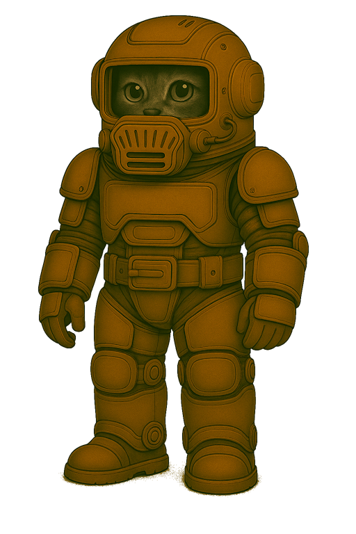
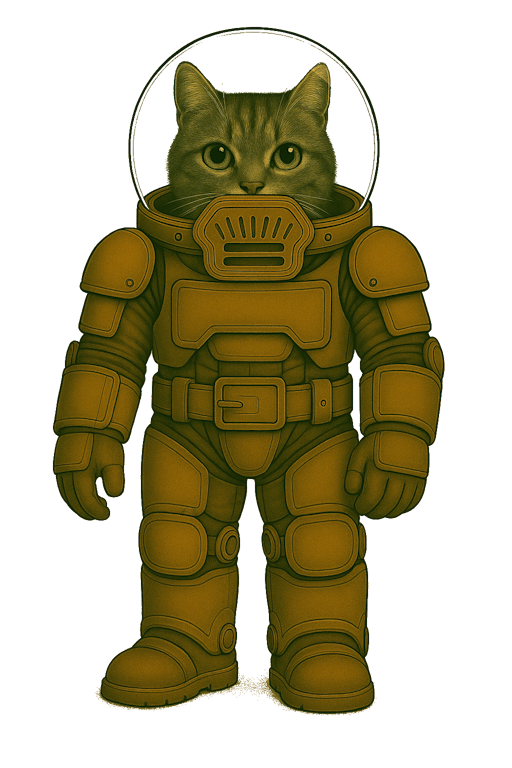

Ausseneinsatzanzug der Bodentruppen – Typ GLx-03P


🧾 Ausrüstungseintrag
| Artikel-ID | Bemerkung |
|---|---|
| GLA-2000003P | Bodentruppen · Kleidung · Ausseneinsatzanzug, gepanzert |
| GLS-2000502 | Bodentruppen · Kleidung · Stiefel |
| GLH-2000303C | Bodentruppen · Kleidung · Helm, Kommunikation integriert |
| UAX-6010101IR | Universal · Atemsystem · Filtermodul, IN-kompatibel, regenerierbar |
🏷️ Gebrauchsbezeichnung: Anzug GLx-03P 🗣️ Spitzname in der Truppe: PR03 (Platten-Rüstung)
🎯 Verwendung
- Ausseneinsätze unter mittleren Belastungsbedingungen
- Kontrollgänge, Stationssicherung, Materialtransport
- Ausbildungsbetrieb mit Bewegungsschwerpunkt
- Einsätze bis ca. 10 Stunden Betriebsdauer mit einer Standardkassette Typ S
📄 Allgemeines
Der Ausseneinsatzanzug GLx-03P die gepanzerte Standardkonfiguration der regulären Bodentruppen. Er wurde für felinische Träger entwickelt, ist nicht IN-kompatibel, bietet aber hohe Bewegungsfreiheit, kombinierte Schutzwirkung und modulare Anschlussstellen. Der GLx-03P befindet sich weiterhin im aktiven Truppeneinsatz und ist rückwärtskompatibel zu älteren Modulen.
Der GLx-03P wird derzeit nach und nach durch den verbesserten Nachfolger GLx-04P in der Truppe ersetzt.
🛠️ Material und Aufbau
Anzug (GLA-2000003P)
Gewebematerial: PMF-55 – PolyMars-Flex® Schutzklasse: 2–3 · rotationsfähig · plattenträgerkompatibel Eigenschaften:
- Thermoausgleichend
- Innenfutter stossdämpfend, druckverteilend, atmungsaktiv
- Aussenschicht: scheuerresistent, staubabweisend, leicht elastisch Farbgebung: einfarbig Mars-Terrakotta (staubreduzierend, dienstlich genormt)
Konstruktionsmerkmale:
- Zweiteiliger Aufbau mit rotationsfähigem Bajonettverschluss
- Kreisdrehgelenk im Taillenbereich, abgedeckt durch taktischen Gürtel
- Belastungszonen elastisch gedämpft
- Verwendung mit Helm GLH-2000303C über Standardanschluss
- Notverwendung mit Kadettenhelm CLH-1000301 möglich – jedoch ohne Kommunikationsfähigkeit
- Integriertes Filtersystem mit folgenden Merkmalen: – Integriertes Filtermodul im Helmkragen zur Aufnahme der Standardkassette Typ S (UAX-6010101I) – IN-kompatibel · systemübergreifend einsetzbar bei allen Nicht-Elite-Systemen – Direkte Verbindung zur Kommunikationsschnittstelle des Anzugs – Werksseitig integriertes Mikrofonmodul mit Rauschunterdrückung – Schnellverschlusskappe mit mikrofonsichernder Führung, mit direktem Zugriff zum werkzeuglosen Austausch – Verbindung zum Truppenfunksystem über Standard-Klinke
Panzerung:
- PNT-4 – PlasTitan-Standard®
- Schutzklasse: 5 · stossverteilend · kugelhemmend · splitterschutzfähig
- Fest verbaut an: Brust, Rücken, Schultern, Oberschenkeln, Knien, Unterarmen
- Farbgebung: Mars-Terrakotta
- Wartung: Panzerplatten modular austauschbar durch Instandsetzung
Stiefel (GLS-2000502)
- Material: STX-55 – StepTex-Standard®
- Schutzklasse: 2–3 · Flexibilität: gut · Profilhaftung: hoch
- Halbhoch, mit Gelenkunterstützung
- Rutschhemmende Anti-Staub-Sohle
- robust
Helm (GLH-2000303C)
- Material: HSR-5 – HelmShell-Regular®
- Visier: SIL-7 – Silicorit-Sichtscheibe
- Schutzklasse: 4
- Kommunikation integriert (Suffix C
- Lautsprecher und PTT-Knopf extern im Anschlusskabel zum Funksystem integriert – Mikrofonanschluss erfolgt über Standard-Klinke am Filtermodul
- Belüftung überarbeitet, Innenpolsterung neu
- Kein HUD oder IN-System
Einsatzprofil
Geeignet für:
- Bewegungslastige Ausseneinsätze auf der Marsoberfläche
- Marsstationen, Patrouillen, Ausbildung unter Feldbedingungen
- Topografieeinsätze
- Ausbildungs- und Übungssituationen marsweit, auch mehrtägig
Nicht empfohlen für:
- Orbitaleinsätze, EVA, Hochrisikozonen
- Biologisch oder chemisch belastete Zonen
🔍 Besonderheiten
- Nicht IN-kompatibel (ausser Filterschnittstelle)
- Seriennummernregistrierung aller Hauptkomponenten
- Rückwärtskompatibel mit GLx-02P und Kadettenhelm CLH-1000301
- Modular aufrüstbar über Gurtträger und Schulterhalterungen
- UAX-6010101I: IN-kompatibel, mikrofonintegriert, nicht regenerierbar
- Vollständige taktische Integration mit Gurten, Packs und Kommunikationsausrüstung